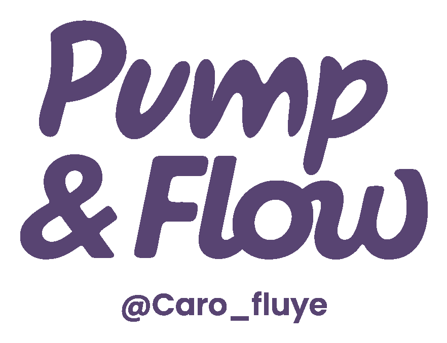

Videos para empezar a respirar, activar tu cuerpo y regalarte una pausa. Sin registro, solo dale play ✨
En Flow Base aprendes la técnica paso a paso, con 8 sesiones completas para practicar a tu ritmo.